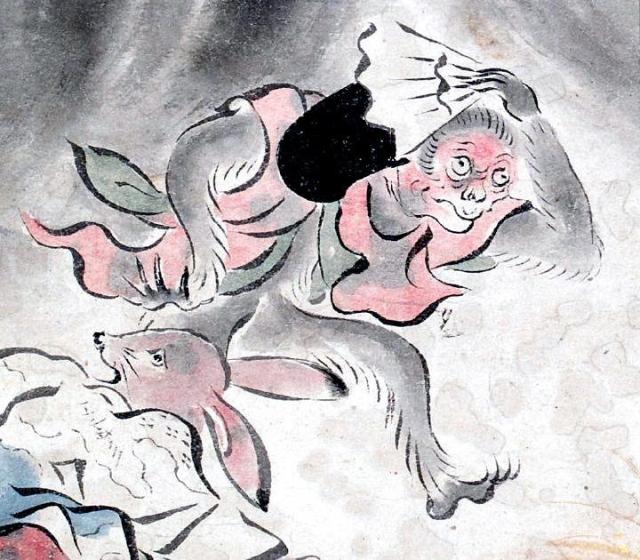

猿の化物。赤い着物をまとっている。爪は鋭く、左手には扇を持っている。黒い烏帽子が脱げている。
著作者：吉光／出典：親書誌：U426_nichibunken_0057：百鬼ノ図；ヒャッキノズ／日付：2006／資源識別子：U426_nichibunken_0057_0006_0002
Copyright (c)2010- International Research Center for Japanese Studies, Kyoto, Japan. All rights reserved.